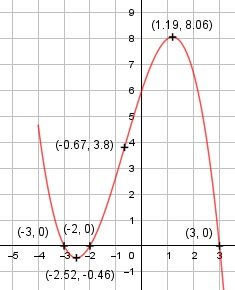

Aufgabe 27 1 2 f(x) = - ---x3 - ---x2 + 3x + 6 3 3 4 4 f'(x) = - x2 - ---x + 3, f''(x) = - 2x - ---, 3 3 f'''(x) = -2 Definitionsbereich: -∞ < x < ∞ Wertebereich: -∞ < f(x) < ∞ Asymptoten: - Symmetrie: - Nullstellen: 1 2 - ---x3 - ---x2 + 3x + 6 = 0 3 3 Durch Probieren gefunden x = 3. Hornerschema: -1/3 -2/3 3 6 x1 = 3 -1 -5 -6 ----------------------------- -1/3 -5/3 -2 0 Polynomdivision: -(1/3)x3-(2/3)x2+3x+6:(x-3) = -(1/3)x2-(5/3)x-2 -(-(1/3)x3 + x2) ------------------- -(5/3)x2 + 3x + 6 -(-(5/3)x2 + 5x) ---------------- -2x + 6 -(-2x + 6) ---------- 0 - (1/3)x2 - (5/3)x - 2 = 0 | *(-3) x2 + 5x + 6 = 0 p, q - Formel: p = 5, q = 6 x2,3 = x2,3 = -2,5 ± x2,3 = -2,5 ± x2,3 = -2,5 ± 0,5 x2 = -3 x3 = -2 N1(0|0) N2 (-3|0) N3(-2|0) Schnittpunkt mit der y-Achse: f(0) = - (1/3) * 03 - (2/3) * 02 + 3 * 0 + 6 = 6 Sy(0|6) Extrempunkte: -x2 - (4/3)x + 3 = 0 |*(-3) 3x2 + 4x - 9 = 0 A, B, C - Formel: A = 3, B = 4, C = -9 x1,2 = x1,2 = x1,2 = -4 ± 11,14 x1,2 = ------------- 6 x1 = -2,52 f(-2,52) = -(1/3) * (-2,52)3 - (2/3) * (-2,52)2 + + 3 * (-2,52) + 6 = - 0,46 x2 = 1,19, f(1,19)1 = = -(1/3) * 1,193 - (2/3) * 1,192 + 3 * 1,19 + 6 = = 8,06 f''(-2,52) = - 2 * (-2,52) - (4/3) > 0 --> Tiefpunkt (-2,52|- 0,46) f''(1,19) = -2 * 1,19 - (4/3) < 0 --> Hochpunkt (1,19|8,06) Wendepunkte: -2x - (4/3) = 0 |+ (4/3) -2x = (4/3) | :(-2) x = -(2/3) = -0,67, f(-0,67) = 3,8, f'''(x) ≠ 0 --> Wendepunkt (-0,67|3,8) Graph:
